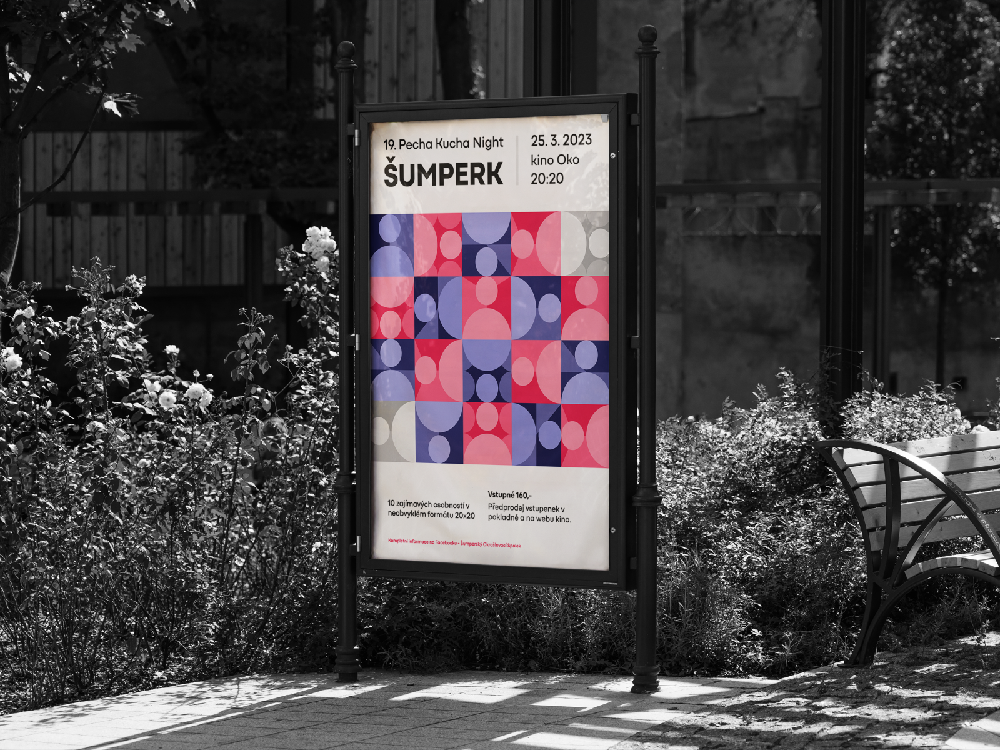
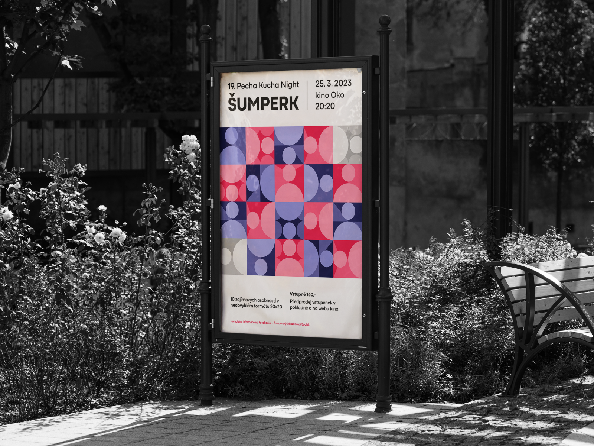

Příprava
— 01
— Vizuální identita se skládá z grafických prvků, které se navzájem doplňují a dají se kombinovat do několika variant.
— V každém prvku je minimalisticky vyznačená osoba, která má za sebou určité pozadí. Každé pozadí naznačuje příběh a zkušenosti každého z řečníků i návštěvníků, kteří chtějí své poznatky předat dál, a díky tomu ostatní inspirovat.
Finalní náhled
— 02
 
